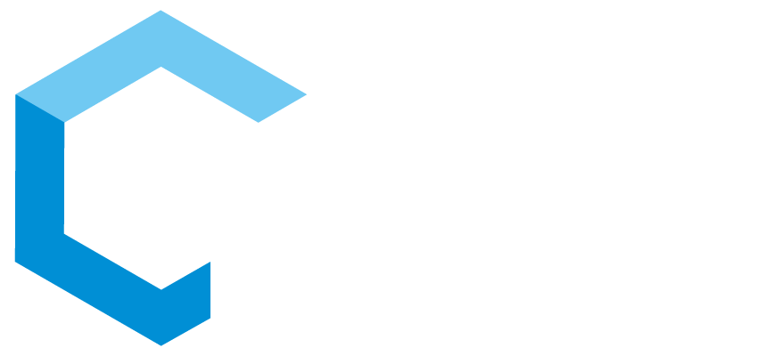
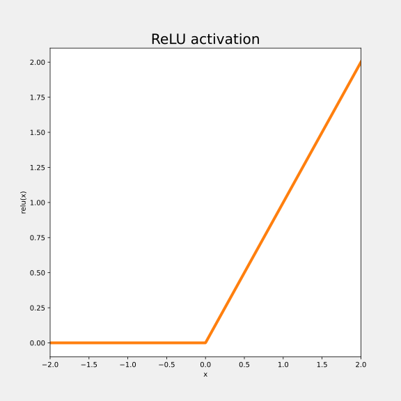
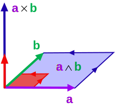
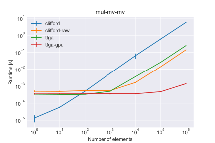
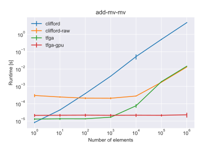
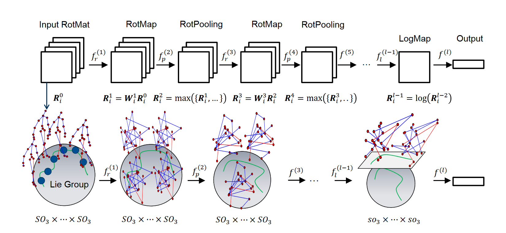
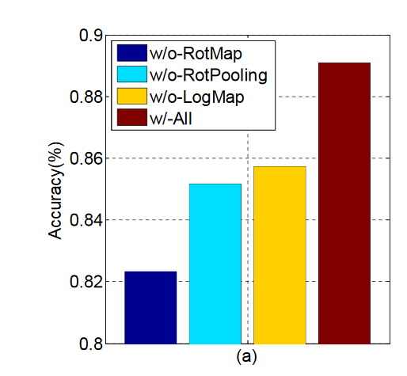
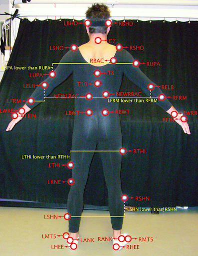
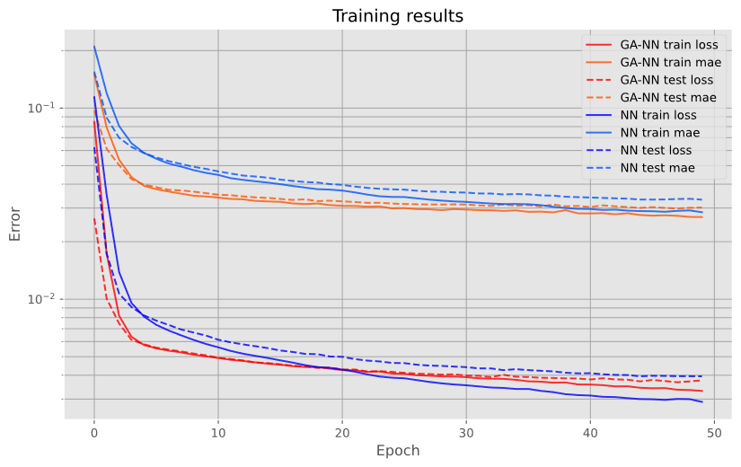
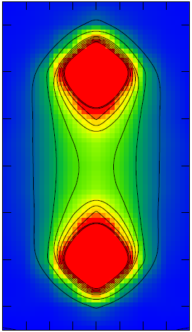

TFGA
TensorFlow-based framework for Geometric AlgebraAbout me
Robin Kahlow
- Machine-Learning and Software Engineer with Cambrian working on Home Visualization
- Areas: Machine Learning, Augmented Reality, Computer Vision
 FLOORVANA+ (Shaw Floors)
FLOORVANA+ (Shaw Floors)

Masked plane finder
- Task: Find masked planes in image
- Solution: Use neural networks that takes image and outputs masked planes
-
Problems
- How to parameterize planes in neural networks?
- What is a good neural network architecture for geometric problems?
- Possible answer: Geometric Algebra
Structure
- TensorFlow
- Neural Networks
- Geometric Algebra
- Geometric Algebra in TensorFlow
- Geometric Algebra Neural Networks
-
Applications
- LieNet
- Joint Transform Estimation
- Lattice QFT
- Conclusion and Future work
1. TensorFlow

- Machine-learning framework for building models
- Runs on many devices (CPUs, GPUs, TPUs)
- Supports distributed computing
- Easy to use (since version 2)
- Automatic differentiation
- Widely used, a lot of documentation
- Mainly for Python
List of numbers
$[1, 7, 5]$
tf.constant([1, 7, 5],
dtype=tf.float32)
Identity matrix
$\delta_{ij}$
tf.eye(num_dims)
3D ones
$\mathbb{1}_{ijk}$
tf.ones([size_i, size_j, size_k])
Addition
$A_{ijk} + B_{ijk}$
a + b
Elementwise sine
$sin(A_{ij})$
tf.sin(a)
Matrix multiplication
$A_{ij} B_{jk}$
tf.matmul(a, b)
$\sum_{k} A_{ijk} \cdot B_{ikl} = A_{ijk} B_{ikl} = C_{ijl}$
c = tf.einsum("ijk,ikl->ijl", a, b)
- Keep $i$, $j$, $l$ (appear on $C_{ijl})$
- Sum over $k$ (doesn't appear on $C_{ijl}$)
\[\begin{aligned}
y(x) & = x^2 & \frac{\delta y}{\delta x}(x) & = 2x \\
y(3) & = 9 & \frac{\delta y}{\delta x}(3) & = 6
\end{aligned} \]
x = tf.constant(3)
with tf.GradientTape() as tape:
y = x ** 2 # 9
print(tape.gradient(y, x)) # 6
2. Neural Networks
- Input $x_i$, output $y_j$, weight matrix $W_{ij}$
- Supervised learning: adjust $W$ to minimize error on dataset

\[\begin{aligned}
y_{j} & = W_{ij} x_{i} & \mbox{(Matrix multiplication)}\\
y_{j} & = W_{ij} x_{i} + c_{j} & \mbox{(+ Bias)}\\
y_{bj} & = W_{ij} x_{bi} + c_{j} & \mbox{(+ Batch dimension)}\\
y_{bj} & = f(W_{ij} x_{bi} + c_{j}) & \mbox{(+ Activation function)}
\end{aligned} \]
$z_{bj} = W_{ij} x_{bi} + c_{j}$
$y_{bj} = f(z_{bj}) = relu(z_{bj})$
def dense(x, w, c):
z = tf.matmul(w, x) + c
# or z = tf.einsum("ij,bi->bj", w, x) + c
y = tf.nn.relu(z)
return y
# x has shape [batch, in_units]
w = tf.Variable(tf.random.normal([x.shape[1], 10]))
c = tf.Variable(tf.zeros([10]))
with tf.GradientTape() as tape:
y = dense(x, w, c)
dy_dw = tape.gradient(y, w)
# Layer contains variables.
# Returns relu(Wx + c) when called.
dense_layer = tf.keras.layers.Dense(
units=10, activation="relu"
)
# x has shape [batch, in_units]
y = dense_layer(x)
# Can reuse layer without creating new variables
v = dense_layer(u)
network = Sequential([
Dense(units=64, activation="relu"),
Dense(units=64, activation="relu"),
Dense(units=40, activation="softmax")
])
# loss: term to be minimized
network.compile(loss="categorical_crossentropy",
optimizer="Adam")
# inputs: [num_samples, 3*2048] (2048 3d points)
# outputs: [num_samples, 40] (40 classes)
model.fit(train_inputs, train_outputs,
epochs=10, validation_split=0.1)
predictions = model.predict(test_inputs)
3. Geometric Algebra
Basis vectors $\{e_x, e_y\}$, Vector $v = v_x e_x + v_y e_y$
Parallel vectors: $e_{x}e_{x} = 1$
Orthogonal vectors anti-commute: $e_{x}e_{y} = -e_{y}e_{x}$
\[\begin{aligned}
a b = & (a_x e_x + a_y e_y) & & (b_x e_x + b_y e_y) & = \\
& a_x b_x + a_y b_y & + & (a_x b_y - a_y b_x) e_x e_y & = \\
& a \cdot b & + & a \wedge b & \\
\end{aligned} \]
Inner Product
Exterior Product

- Basis vectors: $\{e_0, ..., e_n\}$
- Inner product: $e_i \cdot e_j = \begin{cases} -1 / 0 / 1, & i = j \\ 0, & i \neq j \end{cases}$
- Exterior product: $e_i \wedge e_j = \begin{cases} 0, & i = j \\ e_{ij}, & i \neq j \end{cases}$
- Geometric product: $a b = a \cdot b + a \wedge b$
- Exterior product anti-commutes: $e_{ij} = -e_{ji}$
-
Complex numbers / 2D rotation$e_x^2 = e_y^2 = 1 \implies e_{xy}^2 = -1$
-
Quaternions / 3D rotation$e_x^2 = e_y^2 = e_z^2 = 1 \implies e_{xy}^2 = e_{yz}^2 = e_{xz}^2 = -1$
-
Spacetime algebra (Quantum Electrodynamics, Gravity (GTG))$e_t^2 = 1, e_x^2 = e_y^2 = e_z^2 = -1$
-
Projective Geometric Algebra (Translations, Rotations, Reflections, Euclidean motion)$e_0^2 = 0, e_x^2 = e_y^2 = e_z^2 = 1$
4. GA in TensorFlow
Geometric product: multiplication table
For $e_1^2 = e_2^2 = 1$
| 1 | e1 | e2 | e12 |
|---|---|---|---|
| e1 | 1 | e12 | e2 |
| e2 | -e12 | 1 | -e1 |
| e12 | -e2 | e1 | -1 |
Example: $table[e_1, e_{12}] = e_2$
or with blade-indices (Scalar: 0, $e_1$: 1, $e_2$: 2, $e_{12}$: 3): $table[1, 3] = 2$
Can be precomputed
Multivectors: basis blade coefficients as 1-Tensor
Eg.: a = $1 + 2 e_x + 3 e_y + 4 e_{xy} \rightarrow [1, 2, 3, 4] = a_i$
Dense representation of mult. table as 3-tensor
$C_{ijk}$
$a b = y \rightarrow a_i b_j C_{ijk} = y_k$
a = tf.constant([1, 2, 3, 4]) # shape [4]
b = tf.constant([3, 9, 7, 5]) # shape [4]
# c is precomputed and has shape [4, 4, 4]
y = tf.einsum("i,j,ijk->k", a, b, c) # y shape [4]
Geometric product

Addition

$y = a b, \frac{\delta y(a, b)}{\delta a}$
a = tf.constant([1, 2, 3, 4]) # shape [4]
b = tf.constant([3, 9, 7, 5]) # shape [4]
with tf.GradientTape() as tape:
# c is precomputed and has shape [4, 4, 4]
y = tf.einsum("i,j,ijk->k", a, b, c)
print(tape.gradient(y, a)) # = d/da_i sum(y_j), has shape [4]
print(tape.jacobian(y, a)) # = d/da_i y_j, shape [4, 4]
ga = tfga.GeometricAlgebra([1, 1, 1])
# Create geometric algebra tf.Tensor for vector blades
# (ie. e_0 + e_1 + e_2).
# Result: tf.Tensor [0, 1, 1, 1, 0, 0, 0, 0]
vector = ga.from_tensor_with_kind(
tf.ones(3), kind="vector"
)
# 5 + 5 e_01 + 5 e_02 + 5 e_12
# tf.Tensor [5, 0, 0, 0, 5, 5, 5, 0]
quaternion = ga.from_tensor_with_kind(
tf.fill(dims=4, value=5),
kind="even"
)
ga.print(ga.geom_prod(vector, quaternion))
# Grade reversal ~(5 + 5 e_01 + 5 e_02 + 5 e_12)
# = 5 + 5 e_10 + 5 e_20 + 5 e_21
# = 5 - 5 e_01 - 5 e_02 - 5 e_12
ga.print(ga.reversion(quaternion))
# tf.Tensor of shape [1]: -5
# (ie. reversed sign of e_01 component)
ga.print(ga.select_blades(quaternion, "10"))
# tf.Tensor of shape [8] with only e_01
# component equal to 5
ga.print(ga.keep_blades(quaternion, "10"))
# Exterior product e_01 ^ e_2 = e_012.
ga.print(ga.ext_prod(ga.e01, ga.e2))
ga = tfga.GeometricAlgebra([1, 1, 1])
a = ga.from_tensor(...)
b = ga.from_tensor(...)
# Wraps tf.Tensors in tfga's MultiVector class which
# provides operator overrides etc.
mv_a = ga(a)
mv_b = ga(b)
# Reversion ((~mv_a).tensor equivalent to ga.reversion(a))
print(~mv_a)
# Geometric / inner / exterior product
print(mv_a * mv_b, mv_a | mv_b, mv_a ^ mv_b)
# Get back tf.Tensor from the multivector
print(mv_a.tensor)
Tensor vs MultiVector API
- Tensors: easy TensorFlow interop
- MultiVector: less verbose, no overhead
5. GA Neural Nets
Standard Dense Layer: $y_{bj} = f(W_{ij} x_{bi} + c_j)$
$W_{ij} \in \mathbb{R}^{MN}, c_j \in \mathbb{R}^N$
dense_layer = Dense(
units=64, activation="relu"
)
GA Dense Layer: make parameters multivector-valued
$W_{ij} \in \mathbb{Cl}_{(p,q,r)}^{MN}, c_j \in \mathbb{Cl}_{(p,q,r)}^N$
# Create algebra with 3 basis vectors squaring to 1
ga = tfga.GeometricAlgebra([1, 1, 1])
# 1, e01, e02, e12 indices: [0, 4, 5, 6]
even_indices = ga.get_kind_blade_indices("even")
# e0, e1, e2, e012 indices: [1, 2, 3, 7]
odd_indices = ga.get_kind_blade_indices("odd")
ga_dense_layer = tfga.layers.GeometricProductDense(
algebra=ga,
units=64, activation="relu",
kernel_blade_indices=even_indices,
bias_blade_indices=odd_indices
)
Choices
- Activation function $f$: elementwise or acting on multivector (eg. $e^{a e_{12}} = cos(a) + e_{12} sin(a)$)?
- Geometric product $W_{ij} x_i$ or Sandwich product $W_{ij} x_i \widetilde{W}_{ij}$
- Matrix mult $W_{ij} x_i$ or elementwise mult $W_{i} x_i$
- Add bias $c_{j}$?
- Algebra / signature
- Subalgebra for $W_{ij}$ and $c_{j}$
No activation, sandwich product, elementwise multiplication, no bias, quaternion weights
$y_i^{(1)} = W_{i} x_i \widetilde{W}_{i}$
Two layers
$y_i^{(2)} = U_{i} y_i^{(1)} \widetilde{U}_{i} = U_{i} W_{i} x_i \widetilde{W}_{i}
\widetilde{U}_{i}$
Composition of transforms
Multi-layer reduces to one layer
Log input, Exp on final output, ReLU activation, geometric product, matrix multiplication, bias, quaternion weights
$x_i^{(1)} = log(x_i^{(0)})$
$x_j^{(n+1)} = relu(W_{ij}^{(n)} x_i^{(n)} + c_j^{(n)})$
$y_j = e^{W_{ij}^{(N-1)} x_i^{(N-1)} + c_j^{(N-1)}}$
$log$ goes from Lie group to algebra
$exp$ goes from Lie algebra to group
6. GA-NN Applications
6.1 LieNet
Deep Learning on Lie Groups for Skeleton-based Action Recognition

Implementation in TFGA by Hugo Hadfield
ga = GeometricAlgebra([1, 1, 1])
model = Sequential([
TensorToGeometric(ga, blade_indices=[6, 5, 4, 0]),
RotMap(ga, use_bias=False),
LogMap(ga),
Flatten(),
ReLU(),
Dense(units=20),
Softmax(axis=-1)
])
Train model on dataset (Pose-sequence $\rightarrow$ Action)
model.compile(
optimizer="Adam",
loss="sparse_categorical_crossentropy",
metrics=["sparse_categorical_accuracy"]
)
model.fit(
x=inputs_train, y=labels_train,
validation_data=(inputs_test, labels_test),
epochs=100
)

Results
- Relatively easy and quick to implement using TFGA
- Accuracy verified
- But: outperformed by simple Dense ReLU NN (~90% accuracy)
6.2 Joint Transform Estimation
https://www.phasespace.com/applications/3dcharactercreation/

- Data: extract frames from CMU MoCap dataset
- Each joint has position and rotation
- Representation: Motors in 3D-PGA
- Task: given 6 joints' transforms, predict other 31 joints' transforms
- Compare Dense GA NN vs Standard Dense NN
Data and Ganja.js visualization: Steven De Keninck

Results
- GA NN converges quicker, but might just be due to initialization
- Both converge to same test error
6.3 Lattice QFT

\[\begin{aligned}
\mathcal{L}_{QED}(X) = & \langle \hbar (\nabla \psi(X)) \gamma_2 \gamma_1 \gamma_3 \widetilde{\psi}(X) - \\
& e A(X) \psi(X) \gamma_0 \widetilde{\psi}(X) - \\
& m \psi(X) \widetilde{\psi}(X) \rangle_0
\end{aligned} \]
Action $S = \int_{\mathcal{X}} \mathcal{L}(X) dX$
- Many cells, many parallel calculations, perfect for TensorFlow
- TensorFlow Probability provides MCMC samplers (or variational inference) needed for lattice QFT
sta = tfga.GeometricAlgebra([1, -1, -1, -1])
def get_mass_term(psi, electron_mass):
return (electron_mass *
sta.geom_prod(psi, sta.reversion(psi)
)
def get_interaction_term(psi, a, electron_charge):
return sta.geom_prod(
electron_charge * a,
sta.geom_prod(
psi,
sta.geom_prod(sta.e0, sta.reversion(psi))
)
)
def get_momentum_term(psi, spacing, hbar):
dt_psi = finite_differences(psi, axis=0, spacing=spacing)
dx_psi = finite_differences(psi, axis=1, spacing=spacing)
dy_psi = finite_differences(psi, axis=2, spacing=spacing)
dz_psi = finite_differences(psi, axis=3, spacing=spacing)
d_psi = dt_psi + dx_psi + dy_psi + dz_psi
return sta.geom_prod(
hbar * d_psi,
sta.geom_prod(sta.e213, sta.reversion(psi))
)
Sum cells' $\mathcal{L}$ to get Action $S$
def get_action(psi, a, electron_charge):
mass_term = get_mass_term(psi=psi,
electron_mass=electron_mass)
int_term = get_interaction_term(psi=psi,
a=a, electron_charge=electron_charge)
mom_term = get_momentum_term(psi=psi,
spacing=spacing, hbar=hbar)
# Sum terms and get scalar part
lagrangians = (mom_term - mass_term - int_term)[..., 0]
return tf.reduce_sum(lagrangians)
7. Conclusion and Future work
Conclusion
- Fast implementation of GA on GPUs
- Easy to implement GA NNs with TFGA
- Also usable for other high-dimensional problems
Future work
- Exploit sparsity in GPU-friendly way (AST-rewrite / metaprogramming?)
- Custom CUDA kernels for GA operations
- Improve API consistency (eg. blade arguments)
- More layers, more operations, ...
- Explore and implement more applications
Questions
My email: tora@warlock.ai